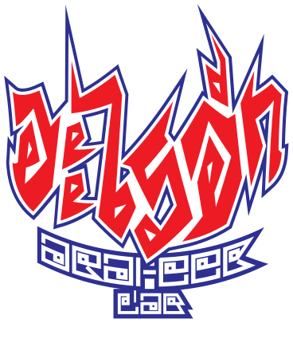

Interactive Mycelial Map
A living mycelial map of the Arai-eek & Hackteria Library—an archive of 64 spores spanning 20 years of DIY biology, sound art, and transfeminist hacktivism.
This portal is an augmented research interface synthesized through a Human-Agentic Workflow. We used autonomous pipelines to extract semantic fragments and generate poetic dossiers from heterogeneous PDF archives.